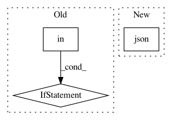

bce529d839bf2f50ac52abfbc83ceb0c0e42ceb0,foreman/data_refinery_foreman/surveyor/array_express.py,ArrayExpressSurveyor,create_experiment_from_api,#ArrayExpressSurveyor#Any#,46
Before Change
experiment_object.submitter_institution = ", ".join(unique_people)[:255]
else:
experiment_object.submitter_institution = idf_dict["Person Affiliation"]
if "Protocol Description" in idf_dict:
experiment_object.protocol_description = ", ".join(idf_dict["Protocol Description"])
if "Publication Title" in idf_dict:
// This will happen for some superseries.
// Ex: E-GEOD-29536
// Assume most recent is "best:, store the rest in experiment annotation.
After Change
protocol_url = request_url + "/protocols"
protocol_request = utils.requests_retry_session().get(protocol_url, timeout=60)
try:
experiment_object.protocol_description = protocol_request.json()["protocols"]
except KeyError:
logger.warning("Remote experiment has no protocol data!",
experiment_accession_code=experiment_accession_code,
In pattern: SUPERPATTERN
Frequency: 3
Non-data size: 3
Instances
Project Name: AlexsLemonade/refinebio
Commit Name: bce529d839bf2f50ac52abfbc83ceb0c0e42ceb0
Time: 2018-09-05
Author: dongbo.hu@gmail.com
File Name: foreman/data_refinery_foreman/surveyor/array_express.py
Class Name: ArrayExpressSurveyor
Method Name: create_experiment_from_api
Project Name: home-assistant/home-assistant
Commit Name: 626763a7c344235073d6831e54502f74fcd4365c
Time: 2016-10-23
Author: me@robbiet.us
File Name: homeassistant/components/notify/ios.py
Class Name: iOSNotificationService
Method Name: send_message
Project Name: home-assistant/home-assistant
Commit Name: c32f47aea657b887c12560a92d691c6fd7f6a311
Time: 2016-10-23
Author: me@robbiet.us
File Name: homeassistant/components/notify/ios.py
Class Name: iOSNotificationService
Method Name: send_message